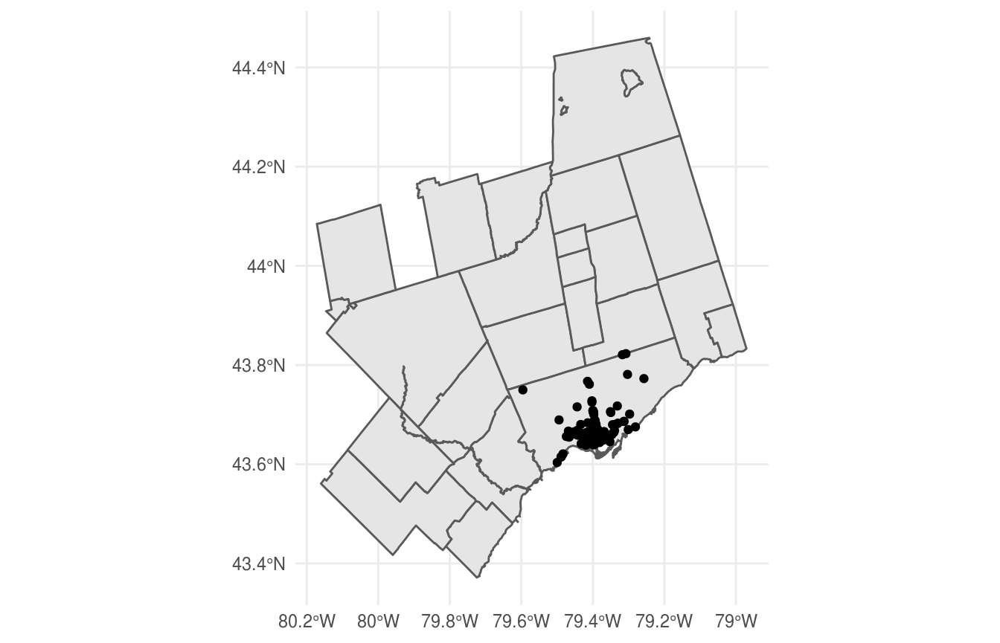

There is a ton of spatial data on the City of Toronto Open Data Portal. Spatial resources are retrieved the same way as all other resources, by using get_resource(), and may require the sf and geojsonsf packages.
We can look at bicycle parking in Toronto. The result is an sf object with WGS84 projection.
library(opendatatoronto)
library(dplyr)
bike_parking_racks <- search_packages("Bicycle Parking Racks") %>%
list_package_resources() %>%
filter(name == "Bicycle Parking Racks Data") %>%
get_resource()
bike_parking_racks
#> Simple feature collection with 241 features and 30 fields
#> geometry type: POINT
#> dimension: XY
#> bbox: xmin: -79.59575 ymin: 43.60367 xmax: -79.25724 ymax: 43.82303
#> epsg (SRID): 4326
#> proj4string: +proj=longlat +datum=WGS84 +no_defs
#> # A tibble: 241 x 31
#> `_id` ADDRESS_POINT_ID ADDRESS_NUMBER LINEAR_NAME_FULL ADDRESS_FULL
#> <int> <int> <chr> <chr> <chr>
#> 1 1929 51630 5 Bartonville Ave… 5 Bartonvil…
#> 2 1930 310564 150 Borough Dr 150 Borough…
#> 3 1931 367443 71 New Forest Sq 71 New Fore…
#> 4 1932 379258 95 River Grove Dr 95 River Gr…
#> 5 1933 394585 24 Victoria Park A… 24 Victoria…
#> 6 1934 772775 315 Bloor St W 315 Bloor S…
#> 7 1935 772800 398 Bloor St W 398 Bloor S…
#> 8 1936 772833 481 Bloor St W 481 Bloor S…
#> 9 1937 772852 509 Bloor St W 509 Bloor S…
#> 10 1938 772899 612 Bloor St W 612 Bloor S…
#> # … with 231 more rows, and 26 more variables: POSTAL_CODE <chr>,
#> # MUNICIPALITY <chr>, CITY <chr>, CENTRELINE_ID <int>, LO_NUM <int>,
#> # LO_NUM_SUF <chr>, HI_NUM <int>, HI_NUM_SUF <lgl>,
#> # LINEAR_NAME_ID <int>, WARD_NAME <chr>, X <dbl>, Y <dbl>,
#> # LONGITUDE <dbl>, LATITUDE <dbl>, MI_PRINX <int>, OBJECTID <int>,
#> # CAPACITY <int>, MULTIMODAL <chr>, SEASONAL <chr>, SHELTERED <chr>,
#> # SURFACE <chr>, STATUS <chr>, LOCATION <chr>, NOTES <chr>,
#> # MAP_CLASS <chr>, geometry <POINT [°]>Using the cancensus package, we can plot the bike racks along with a map of Toronto!
library(ggplot2)
library(cancensus)
toronto <- get_census(
dataset = "CA16", regions = list(CMA = "35535"),
level = "CSD", geo_format = "sf", quiet = TRUE
)
ggplot() +
geom_sf(data = toronto) +
geom_sf(data = bike_parking_racks) +
theme_minimal()